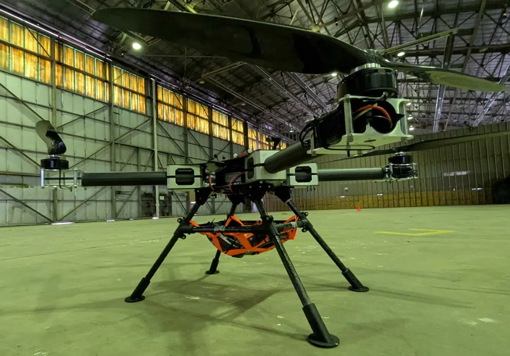
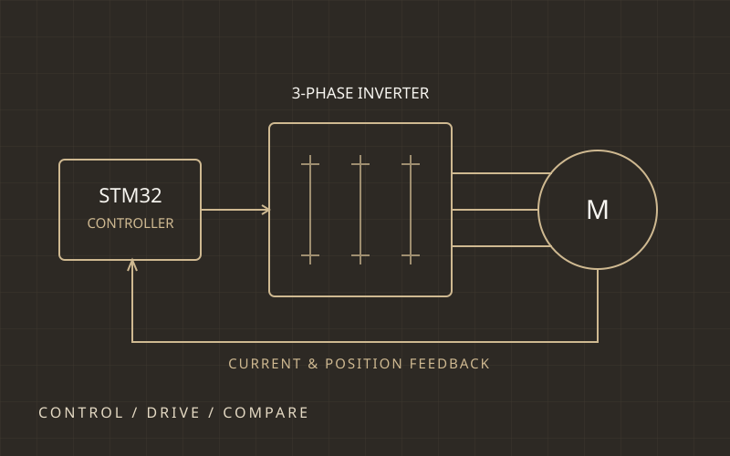

01 / System design & integration
Vertical Flight Systems Purdue
Leading an autonomous aircraft project that spans system architecture, battery design, power distribution, prototype integration, and flight validation.
See the projectI’m Valentino Cattaneo. I work across electronics, firmware, prototyping, and system testing to solve the practical problems that connect a design to a working product.
B.S. Electrical Engineering, Power & Energy Systems Concentration. Class of 2028


I’m pursuing a B.S. in Electrical Engineering at Purdue University, concentrating in Power and Energy Systems, with a 3.94 GPA and an expected graduation in May 2028. I'm drawn to the work between a design and a dependable system: designing electrical systems and PCBs, building prototypes, writing firmware, debugging, and pushing the limits of the design during testing.
This portfolio covers personal, academic, and professional work I've done. In each project, I try to show the key decisions, iterations, and lessons behind the finished hardware.
Aside from work and projects, I really enjoy playing tennis and golf, as well as travel the world. The picture on the left shows me in the Prague castle from when I solo-travelled Europe.

01 / System design & integration
Leading an autonomous aircraft project that spans system architecture, battery design, power distribution, prototype integration, and flight validation.
See the project
02 / Research & motor control
Developing a dual three-phase drive from control architecture and stator prototyping through custom encoder hardware and sensored FOC testing.
See the project
03 / Power electronics & controls - project in progress
A flexible hardware platform for implementing and comparing motor-control algorithms and rotor-position estimators.
See the projectWhere I’ve worked
Across industry, research, and student-led projects, I’ve learned how to carry a design from an idea through prototyping, hardware bring-up, and validation.
At Angel Aerial Systems, I contributed to battery-system development for the Trio Scout, a rapidly deployable tricopter designed for flights of up to 100 minutes. My work covered pouch-cell assembly, high-current interconnects, mechanical integration, BMS electronics, embedded firmware, and system-level validation.
A major focus was redesigning the aircraft’s Battery Management System to improve reliability, serviceability, protection, and diagnostics. I helped turn field observations into circuit, PCB, communication, fault-handling, and data-logging improvements. I also led the BMS-side root-cause investigation of a battery-pack issue and used the findings to inform later design changes.
On the pack side, I helped transition assembly to resistance-welded interconnects and designed electrical and mechanical interfaces in Siemens NX. Working with the mechanical team on board geometry, cell-tab forming, component placement, assembly, and service access showed me how closely electrical, mechanical, thermal, and manufacturing decisions interact.
I supported test and manufacturing procedures, verifying electrical interfaces and protection behavior while troubleshooting interactions among the pack, aircraft electronics, and embedded software. The internship gave me hands-on responsibility through the full engineering cycle, from field investigation and requirements to design, firmware, assembly, and validation.

As president of VFS Purdue, I lead a multidisciplinary team of about 30 students designing and building an autonomous, human-carrying aircraft for the International GoAERO VTOL Competition. Our team received the NASA University Innovation Award during Stage 1.
During initial design, I developed a preliminary aircraft-sizing tool in MATLAB and contributed to propulsion, avionics, energy-storage, and electrical-architecture trade studies. We connected mission requirements to constraints such as mass, endurance, power demand, controllability, and component availability.
For Stage 2, we designed, built, and autonomously flew a 40-percent-scale prototype. I worked on propulsion and avionics sizing, power distribution, wiring, component integration, and ground and flight testing. It was a chance to see subsystem designs become a complete aircraft while troubleshooting the interactions that only appear at system level.
For Stage 3, I’m coordinating design reviews, procurement, manufacturing, testing, scheduling, safety planning, and technical decisions for the full-scale aircraft. My technical focus is a roughly 100 V monitoring and balancing BMS for its 14.4 kWh battery pack, including communication, fault detection, and avionics integration.


I supported development and testing of a six-phase motor and drive prototype for UAV propulsion. The work combined motor-control simulation, embedded control development, PCB design, hardware bring-up, and experimental validation.
I developed a Simulink model of two synchronized three-phase Field-Oriented Control loops to evaluate the control architecture before building the physical system. I also designed and routed a magnetic encoder PCB in Altium for precise rotor-position feedback.
During integration, I worked across the encoder, control firmware, inverter, and modified motor. I contributed to board bring-up, signal verification, control-loop tuning, current and speed-loop validation, and hardware-firmware troubleshooting.
The project culminated in testing on a propeller-based propulsion stand, including operation at peak test speeds and power. It gave me practical experience taking a motor-control design from simulation to a working electromechanical system.